長期トレンド
JKMとJEPXシステムプライスの推移グラフ
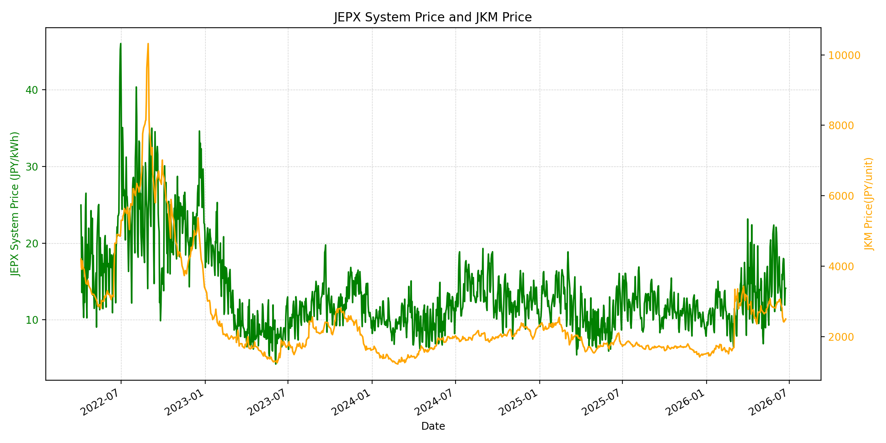
WTIの推移グラフ
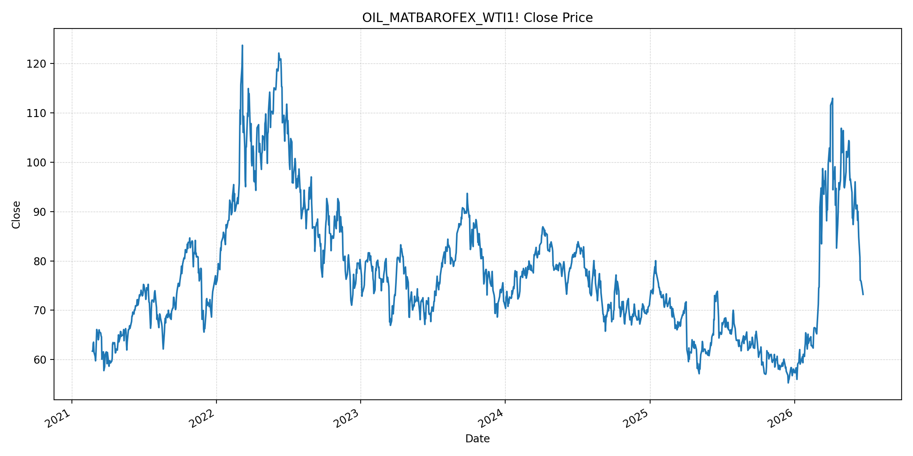
JEPXエリアプライスグラフ（直近一年分）
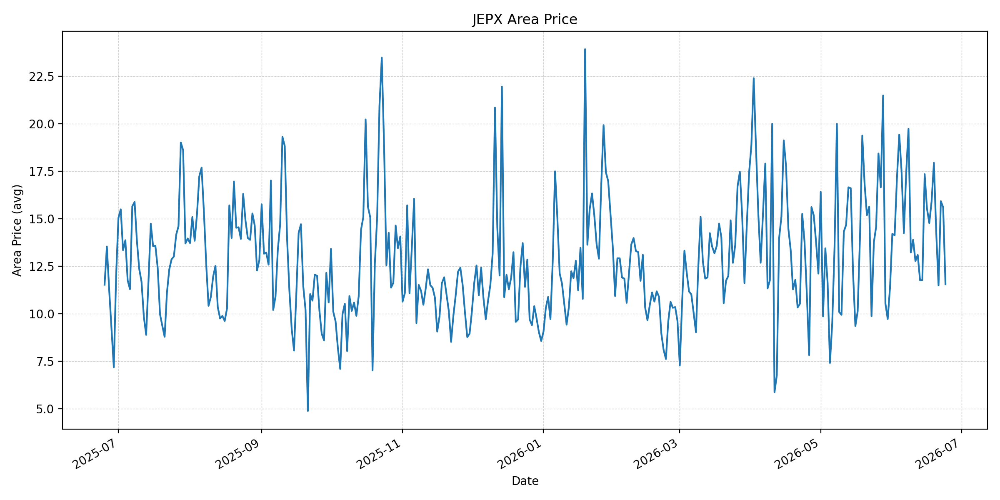
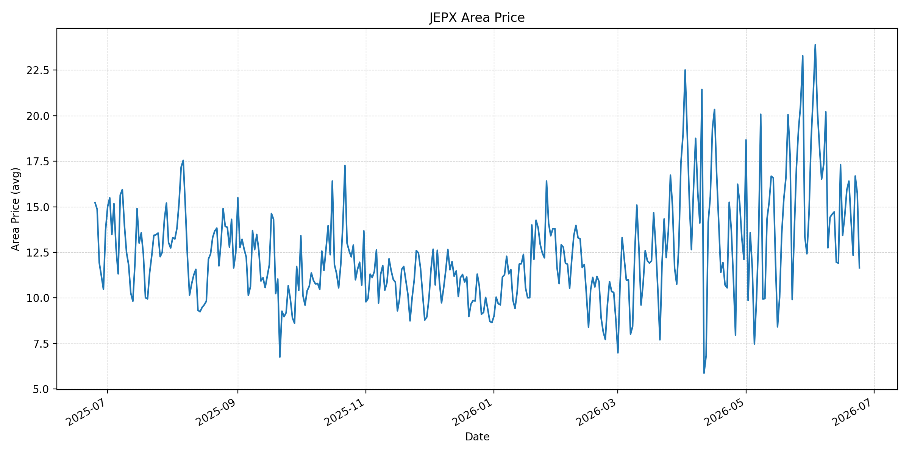
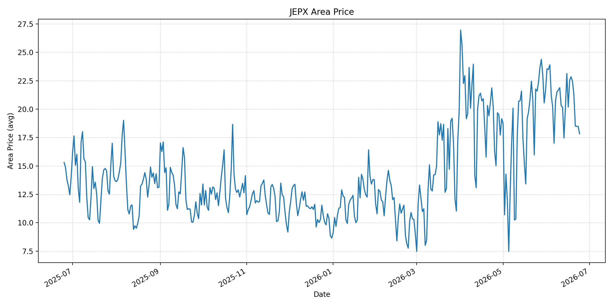
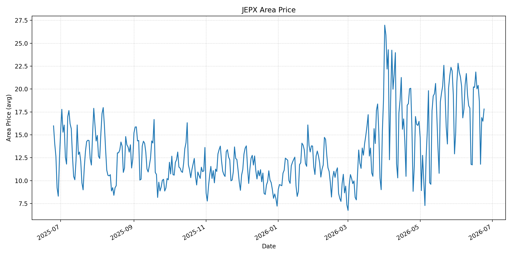
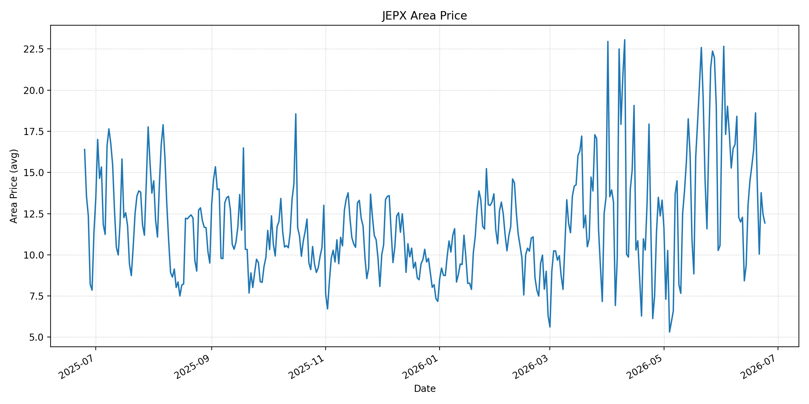
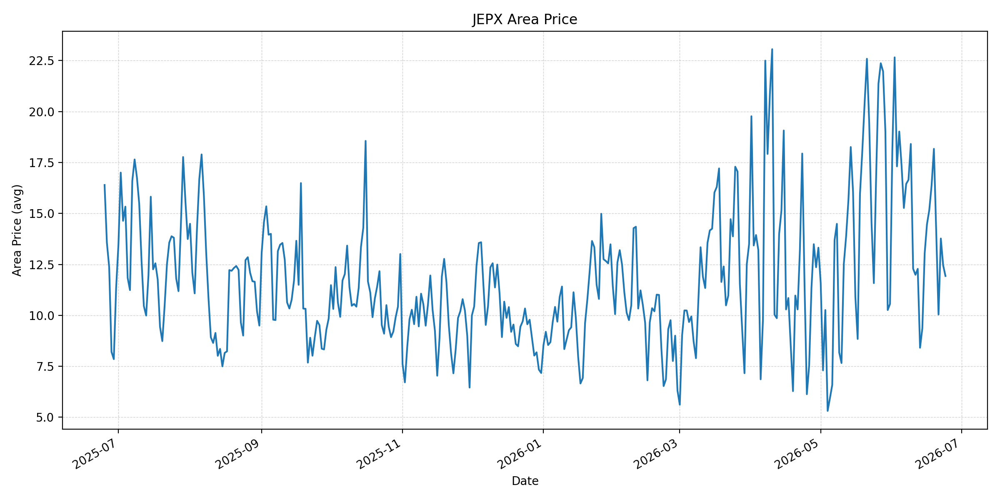
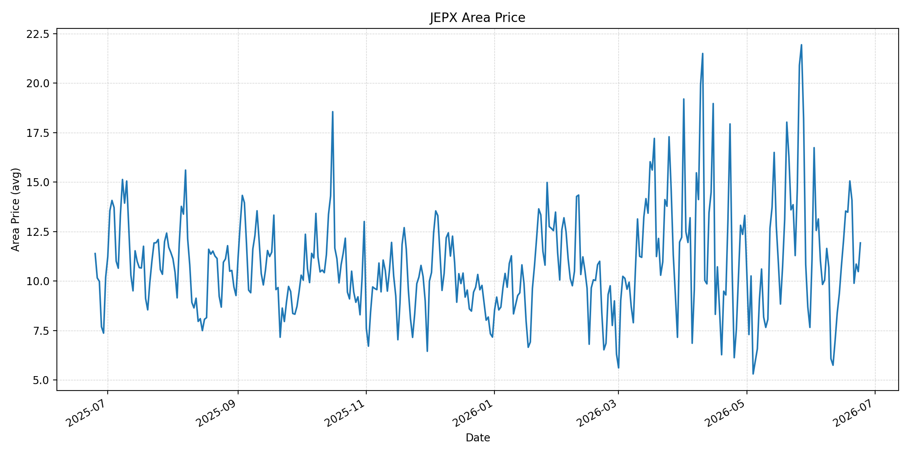
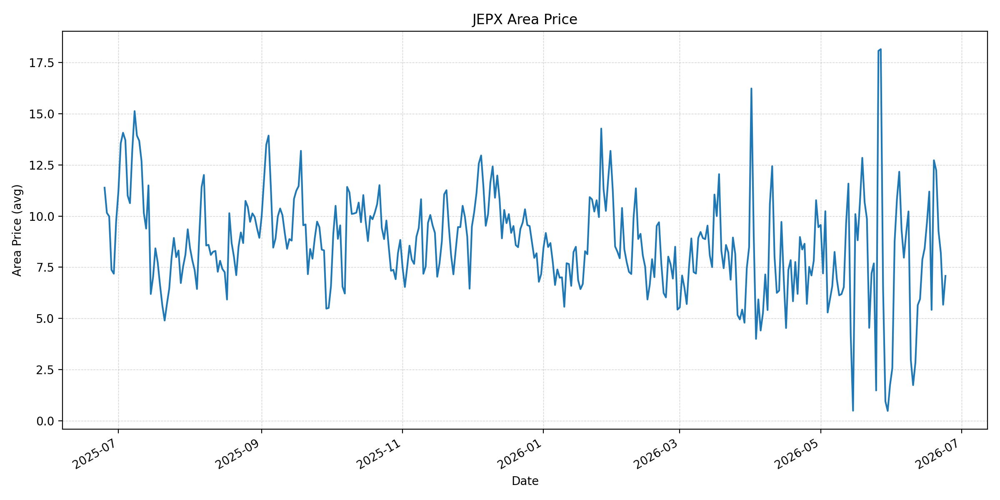
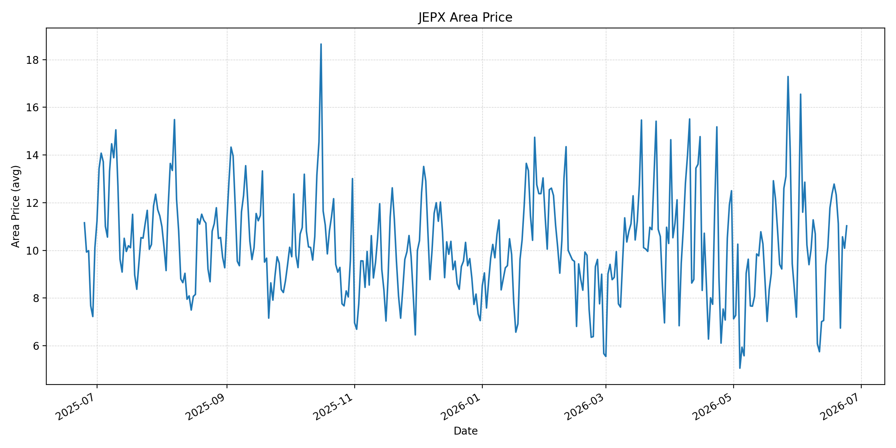
短期トレンド
JKMとJEPXシステムプライスの推移グラフ
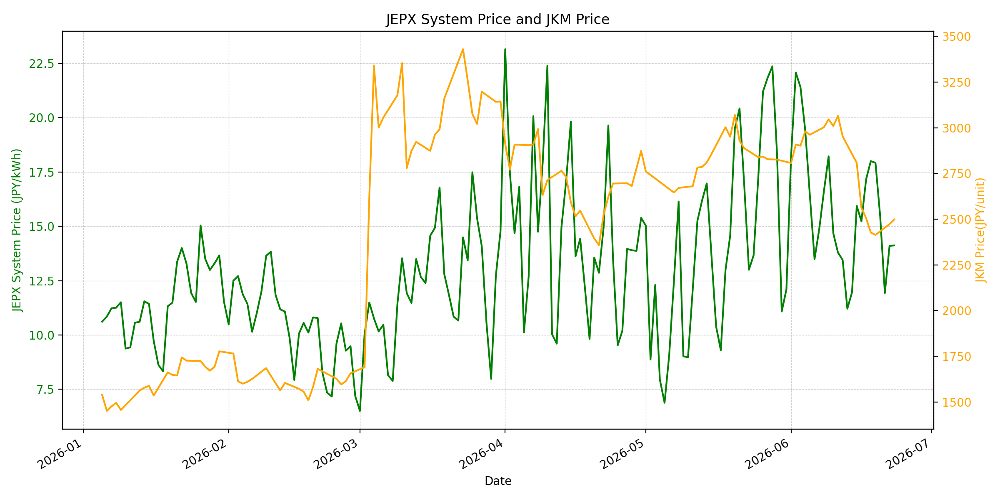
WTIの推移グラフ
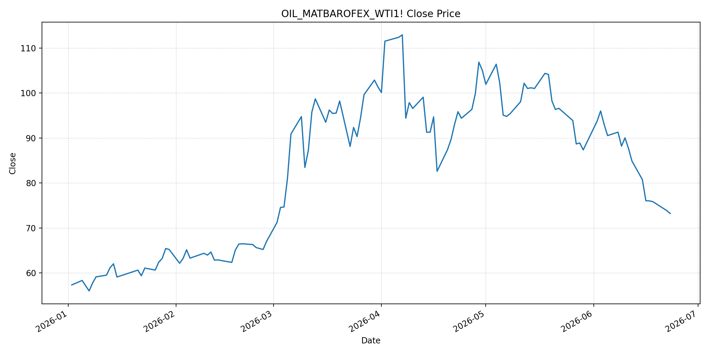
JEPXシステムプライス
JEPXは受渡日ベースの最新非空値で評価しています。最新値は 2026-06-24 分です。先週終値は 2026-06-17 時点の直近値、先月終値は 2026-05-31 時点の直近値で評価しています。
| エリア | 当日価格 | 前日価格 | 前日比（％） | 先週終値 | 先週比（％） | 先月終値 | 先月比（％） | 過去最高値 | 最高値比（％） |
|---|---|---|---|---|---|---|---|---|---|
| システム | 13.73 | 14.12 | -2.76 | 17.16 | -19.99 | 12.10 | 13.47 | 64.06 | -78.57 |
| 北海道 | 11.55 | 15.60 | -25.96 | 14.77 | -21.80 | 11.38 | 1.49 | 73.92 | -84.37 |
| 東北 | 11.65 | 15.73 | -25.94 | 14.49 | -19.60 | 14.64 | -20.42 | 84.92 | -86.28 |
| 東京 | 17.83 | 18.48 | -3.52 | 22.57 | -21.00 | 21.65 | -17.64 | 86.13 | -79.30 |
| 中部 | 17.82 | 16.49 | 8.07 | 21.86 | -18.48 | 15.25 | 16.85 | 52.06 | -65.77 |
| 北陸 | 11.93 | 12.46 | -4.25 | 15.39 | -22.48 | 10.56 | 12.97 | 46.48 | -74.34 |
| 関西 | 11.93 | 12.46 | -4.25 | 15.17 | -21.36 | 10.56 | 12.97 | 46.48 | -74.34 |
| 中国 | 11.93 | 10.48 | 13.84 | 13.54 | -11.89 | 7.66 | 55.74 | 46.48 | -74.34 |
| 四国 | 7.08 | 5.67 | 24.87 | 11.20 | -36.79 | 1.74 | 306.90 | 46.48 | -84.77 |
| 九州 | 11.03 | 10.09 | 9.32 | 12.37 | -10.83 | 7.20 | 53.19 | 40.54 | -72.79 |
LNG先物価格
最新値は 2026-06-23 の LNG(close) です。先週終値は 2026-06-16 時点の直近値、先月終値は 2026-05-29 時点の直近値で評価しています。
| 当日価格 | 前日価格 | 前日比（％） | 先週終値 | 先週比（％） | 先月終値 | 先月比（％） | 過去最高値 | 最高値比（％） |
|---|---|---|---|---|---|---|---|---|
| 2498.00 | 2473.00 | 1.01 | 2562.00 | -2.50 | 2826.00 | -11.61 | 10319.00 | -75.79 |
石油先物価格
最新値は 2026-06-23 の OIL(close) です。先週終値は 2026-06-16 時点の直近値、先月終値は 2026-05-29 時点の直近値で評価しています。
| 当日価格 | 前日価格 | 前日比（％） | 先週終値 | 先週比（％） | 先月終値 | 先月比（％） | 過去最高値 | 最高値比（％） |
|---|---|---|---|---|---|---|---|---|
| 73.21 | 73.86 | -0.88 | 76.05 | -3.73 | 87.36 | -16.20 | 123.70 | -40.82 |
ニュース
イラン情勢に関するニュース
- 2026年6月23日、Guardianは、トランプ米大統領がイランは「長期にわたる最高水準の核査察」に合意したと投稿した一方、イラン外務省は米・イスラエル攻撃で損傷した核施設へのIAEA査察予定はないと述べたと報じました。停戦後の合意履行はなお確認が必要です。 参照: The Guardian, 2026-06-23
- 同日、Guardianは、イスラエル軍によるレバノン南部での死者発生を受け、イラン側が米イラン覚書への違反は和平協議を損なうと警告したと報じました。Rubio米国務長官とVance米副大統領はレバノン大統領と停戦監視体制を協議しています。 参照: The Guardian, 2026-06-23
ホルムズ海峡経由の石油・LNGに関するニュース
- 2026年6月24日、APは、米イラン暫定合意後にホルムズ海峡の船舶通航は回復しているものの、6月19日から22日の通航は131隻で、戦前の1日100〜130隻規模にはまだ戻っていないと報じました。中央航路はなお機雷のため閉鎖され、船舶は北側・南側の代替航路を利用しています。 参照: AP, 2026-06-24
- MarketWatchは2026年6月23日、危険が残るにもかかわらず大型タンカーの用船料が日額約28万ドルまで上がり、船主をペルシャ湾向け貨物に戻していると報じました。通航再開は原油供給の下押し材料ですが、保険料と安全確認はLNG・石油輸送の制約として残ります。 参照: MarketWatch, 2026-06-23
ホルムズ海峡経由でない石油・LNGに関するニュース
- 過去24時間で、日本向けの非ホルムズ新規大型調達やLNG長期契約を示す強い追加報道は確認できませんでした。APは、最終合意が成立しても天然ガス・原油・肥料などの流れが戦前水準に戻るには数カ月を要する可能性があると伝えています。 参照: AP, 2026-06-24
- Barron'sは2026年6月23日、ホルムズ海峡の流量回復を受けてBrent原油がイラン戦争開始前以来の安値で清算されたと報じました。非ホルムズ調達の新規拡大よりも、既存海上輸送の段階的回復が燃料価格の主因になっています。 参照: Barron's, 2026-06-23
日本国内のイラン戦争に関係するニュース
- 過去24時間で、JEPX制度、国内電力需給ルール、または日本政府の対イラン戦争関連対策を直接変更する主要な新規公表は確認できませんでした。
- 関連する国内材料として、経済産業省は2026年5月20日、2026年度夏季は全エリアで安定供給に最低限必要な予備率3％を確保できるため節電要請を実施しないと発表しています。一方で、国際情勢の変化、異常気象、火力発電所の地域集中はリスクとして明記されています。 参照: 経済産業省, 2026-05-20
インサイト
ニュース事項による日本の電力市場への影響（短期：数日〜1週間）
- JEPXシステムプライスは 13.73 円/kWhで前日比 -2.76%、先週比 -19.99% です。東京も 17.83 円/kWhで先週比 -21.00% まで下がっており、ホルムズ通航回復と原油安のニュースは短期の上値を抑えています。
- OILは 73.21 で前日比 -0.88%、先週比 -3.73% と低下しました。Barron'sが示すBrent安、APが示す通航回復は燃料費見通しを冷やす材料ですが、機雷、保険、通航料協議が残るため、下落をそのままJEPX低位安定とは見なしにくいです。
- LNGは 2498.00 で前日比 1.01% と小反発しましたが、先週比は -2.50%、先月比は -11.61% です。数日〜1週間では燃料コストの下押しが優勢な一方、四国 7.08、中部 17.82 など地域差が大きく、エリア別需給がスポット価格を左右します。
ニュース事項による日本の電力市場への影響（長期：1ヶ月〜半年）
- 米イラン暫定合意と船舶通航の増加は、日本の燃料調達コストにとって改善材料です。LNGは過去最高値比 -75.79%、OILは -40.82% と危機ピークから大きく低い水準にあり、合意履行が進めば半年内の燃料費はさらに安定しやすくなります。
- ただしAPが指摘する通航料、機雷除去、保険の問題に加え、Guardianが報じた核査察をめぐる米イランの説明差は長期契約・船腹手配のリスクプレミアムを残します。1ヶ月〜半年では、価格そのものよりも通航ルールと保険実務の安定が日本の調達コストを左右します。
- 国内では節電要請なしの前提が維持されていますが、METIは国際情勢と火力発電所の地域集中をリスクとして残しています。システム価格は先月比 13.47% とまだ高く、燃料安が進んでも夏季需要と地域別供給力がJEPXを下支えする可能性があります。